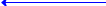
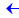
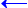
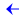
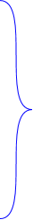
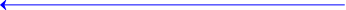
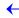

地址 与 对象类型解耦，指针运算比C语言更纯净、更便捷、更优雅
print b_ADDR+1

如果是 int* p=0x1000
则 p+1 = 0x1004
如果 double* p=0x1000
则 p+1 = 0x1008
只有当 char* p=0x1000 时
p+1 才=0x1001
//回顾《C语言指针问题》
1、除非指针直接指向char类型，否则无法进行“步长=1字节”的最细粒度的指针操作
2、你可以手动转型，但转型并非万能，因为它又与char、int...等类型的编码规则强耦合，有隐患且不利于拓展
3、语义不清晰、转型语句一大堆，非常混淆视觉，难以维护
...
int a = 10
int b -> a
编译器自动生成b_ADDR，但不是直接生成在源码里，而是生成在编译器运行时的符号表里
符号："a"
对象类型：int
句柄类型：实例型
偏移：0
符号："b"
对象类型：int
句柄类型：指针型
这意味着你可以直接在代码里使用 b_ADDR (即便你未曾手动定义它)
--假设a的地址0x1000
--输出0x1001 ✔️，而非0x1004
回顾传统编程，指针 与 目标对象的类型是强耦合的，导致难以进行步长为1的指针运算
AXION的【地址运算】完全遵循【数学规则】，【类型系统】不会介入
AXION类型系统 不会介入 地址运算
虽然b_ADDR是~int类型，但地址运算时不会像C那样给你自动乘个4（int的长度），还得靠我手动转char*来实现1步长
int a = 65
char b ="A"
传统编程：解引用类型 与 目标类型强绑定
这不是在强行搞特殊化，其背后遵循一套严格的方法论
接下来我们将详细解释其背后的设计哲学——AXION【地址/引用】与【类型系统】的关系，与传统编程理论完全不同
int a = 65
char a ="A"
AXION：解引用类型 与 目标类型无关，结果是纯净地址 ~
&a 类型是 int*
&a 类型是 char*
~a 类型是 ~(或写成ADDR) ， 而不是 ~int
~a 类型是 ~(或写成ADDR) ，而不是 ~char
-- 这一小节先快速介绍AXION的处理方式，下一节再详细解释为什么
int* p = &a
int* p = &b
传统编程：【地址类型】和【对象类型】耦合了
左边p是int*类型；右边 &a 是int* 类型，编译通过✔️
左边p是int*类型；右边 &a 是char* 类型，编译错误❌️
~int addr = ~a
~int addr = ~b
~int addr = a
只要求 “右值是地址类型~”即可
右边确实都是地址类型 ~ ,所以编译通过✔️
--视版本不同，编译器这里可能也会放过，也可能会自动转型
但从设计逻辑上是违规的，例如如果不是char类型，而是某种自定义的结构体类型T，编译器就报错了

【方法论】
AXION的设计理念是：
我【取引用】的目的不是为了【解引用】，而只是为了【获得地址】
而【地址】本身和原对象是什么类型根本毫无关系
跳出计算机编程，这其实很好理解：
我只是想获得某个对象的空间坐标例如（23,45,67），这个（23,45,67）本身就是纯粹的坐标，坐标本身和原对象是猫是狗还是火箭毫无关系
——这个例子应该能让你有点feel了，但却不一定能真正get这个逻辑的本质，下面开始剖析本质
【取引用】是对 【a】而言的，而不是对【int a】这个组合逻辑而言的
AXION【取引用】得到的是纯净地址，与目标类型无关
传统编程的【取引用】的结果是int*，那么反推回去将得到：
它是对[int a]这个整体逻辑同时取引用的
int a

真正搞特殊化的不是AXION，而是传统编程
AXION永远是遵循最客观的事实、人类最底层的世界观来设计语义——这是AXION最根本的方针和理念，任何决策的背后都一定遵循一套严格方法论
而传统编程由于缺乏科学、统一的方法论，反而会出现不少违和
这不是很怪吗？明明我写的是 &a ，怎么变成了&[int a]——语义被篡改了❌️
而AXION里~a就是最纯粹的语义——就是对a取引用，所以你将获得纯净的地址✔️
与左边是int还是char还是T...毫无关系



AXION定义【引用/地址】时，只检查“是否是地址”，只要是“地址类型~”就通过
AXION 在定义【地址】时，只校验“值类型是不是地址”而不会校验“解引用后的类型是不是int”



编译错误❌️：a是int类型，不是地址类型~
Q：那类型签名【~int】里的这个【int】是有啥意义？
A：那是给【解引用】的，告诉编译器 addr~ 是个int
~int addr = ~a
print addr~
输出65 （int类型）
【解引用时】按照int类型处理
之所以感觉有点怪的根源出在“int”这三个字母身上，接下来我们写清楚“int代表什么”就很清楚了
int a =65
--这点本身不是问题，遵循左右类型一致是合理的编程范式
定义int时


右侧对象类型必须是：int
符号：a
右值类型：int
右值：65
~int addr = ~a
定义~int时

右侧对象类型必须是：~
解引用后是啥类型：int
符号：addr
右值类型：~
右值：a的地址
语义结构化
语义结构化
--此处“int”三个字母是拿来限定右侧对象类型的，所以一旦右侧提供的不是int，就会报错
--这里的“int”三个字母只是拿来服务于【解引用】这个应用场景的
--而非是在定义时给右边做类型检查的！
--此处“~”对标上面“int”，它们都是拿来在定义时，检查右侧对象类型的，所以一旦右侧提供的不是ADDR，就会报错
结构体里，我们能用key明确描述两个int的职责不同
但源码里实在不方便写那么一大串“key”，所以最终采用了 ~int 这种写法
~int addr = ~a
print addr~
--好处是，对“addr~” 和“~int" 两边同时解引用就能得到“ addr~ = int” 这样明确的语义
AXION 在【解引用】时，会根据"~T"里的"T"来处理




符号："b_ADDR"
对象类型：ADDR
解引用类型：int
句柄类型：实例型
偏移：4